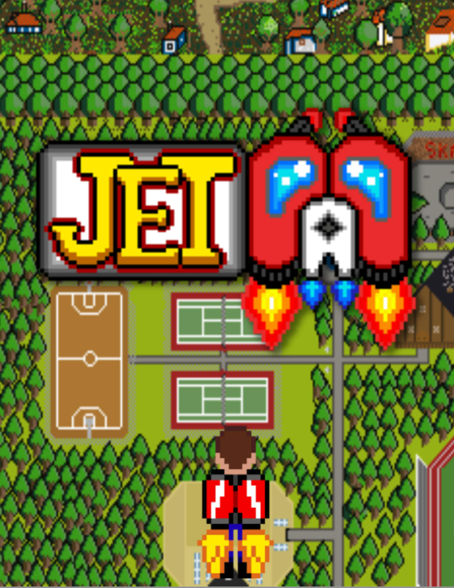
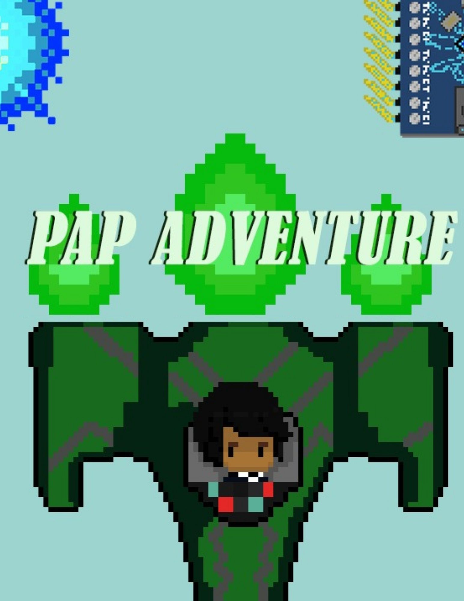
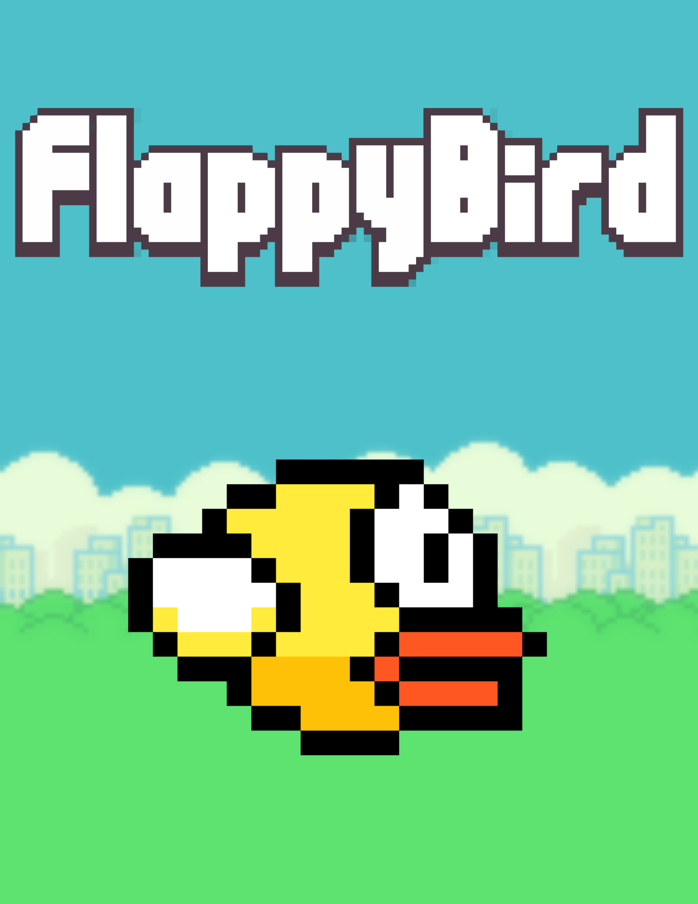

Jogos TEAC
A turma de (Técnico de Elétronica, Automação e Computadores) da Escola Técnica e Profissional de Mafra produziu alguns jogos durante o curso que estão disponiveis abaixo para jogar e baixar.

Jet PAP

PAP Adventure

Flappy Bird
Jogos Open Source
Jogos de código aberto são jogos dos quais o seu código está disponível. Geralmente eles são distribuídos livremente e algumas vezes são multiplataforma. Inclusive, muitos deles são incluídos em distribuições Linux. Jogos de código aberto que são software livre e contém conteúdo exclusivamente livre são também chamados de jogos livres. Todos os jogos livres são código aberto, mas nem todo jogo de código aberto é livre.

Battle for Wesnoth

Super Tux

StepMania

Lugaru

Frets on Fire

Cataclysm